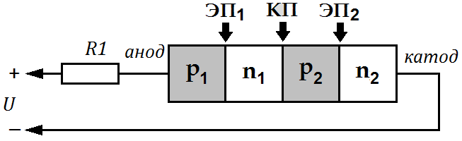
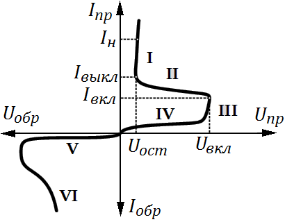
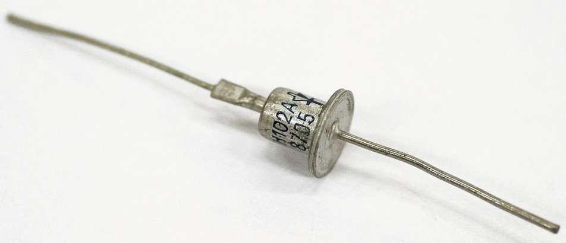
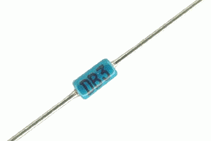
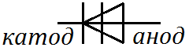
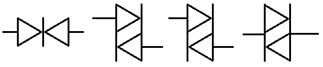

Динисторы
Динистором, или, по-другому, диодным тиристором, называют переключательный компонент с двумя выводами, который переходит в открытое состояние при превышении определённого напряжения, которое прикладывают между его выводами. Динисторы содержат три электронно-дырочных перехода. Схематичное изображение структуры динистора дано на рис. 1.

Вывод от внешней зоны n2 называют катодом, а от зоны p1 – анодом. Зоны n1 и p2 носят название баз динистора. Переход между зонами p1, n1 и p2, n2 именуют эмиттерным (ЭП), а между зонами n1 и p2 – коллекторным переходом (КП).
Если от источника питания к аноду динистора приложить небольшое отрицательное напряжение, а к катоду положительное напряжение, то центральный коллекторный переход будет открыт, а крайние эмиттерные переходы станут закрыты. Зоны n1 и p2 не могут преодолеть, поступающие из анода и катода основные носители зарядов, а, следовательно, они не достигнут базы динистора. В результате через динистор течёт небольшой обратный ток, обусловленный неосновными носителями заряда, и динистор закрыт. Если к аноду динистора приложить очень большое отрицательное напряжение, а к катоду – высокое положительное напряжение, то произойдёт лавинный пробой, что видно на вольтамперной характеристике динистора, показанной на рис. 2.

I – участок открытого состояния динистора, на котором его проводимость высока;
II – участок отрицательного сопротивления;
III – участок пробоя коллекторного перехода;
IV – участок в прямом включении, на котором динистор заперт, и приложенное к его выводам напряжение меньше, чем необходимо для возникновения пробоя;
V – участок обратного включения динистора;
VI – участок лавинного пробоя.
Если от источника питания к аноду динистора приложить небольшое положительное напряжение, а к катоду незначительное отрицательное напряжение, то коллекторный переход будет закрыт, а эмиттерные переходы станут открыты. Носители зарядов поступают из области катода n2 в зону p2 (электроны), а из области анода p1 в зону n1 (дырки). В указанных зонах баз носители заряда уже станут неосновными, и в результате в этих зонах возникает рекомбинация носителей зарядов, и из-за неё концентрации свободных носителей зарядов станут меньше. Поле коллекторного перехода будет ускоряющим для ставших неосновными носителей заряда, которые ввиду инжекции его преодолевают и оказываются в зонах, где они вновь будут основными. В областях p1 и n2 эти носители зарядов снова станут неосновными и вновь рекомбинируют. По причине рекомбинаций носителей зарядов проводимость динистора на участке IV мала и протекающий через него обратный ток также мал.
Если начать увеличивать постоянное напряжение, прикладываемое к динистору в прямом включении, то возрастает ширина коллекторного перехода и скорость носителей заряда, и становятся меньше интенсивности рекомбинаций, а прямой ток через динистор медленно возрастает. Чем больше будет прямое напряжение, тем интенсивнее станет ударная ионизация, порождающая новые носители заряда, что при определённом напряжении включения приведёт к лавинному пробою коллекторного перехода. Пробой сопровождает резкое увеличение проводимости динистора в прямом включении. Динистор открывается, и на нём будет падать небольшое остаточное напряжение.
В настоящее время существуют симметричные и несимметричные динисторы. Симметричные динисторы способны проводить ток в обоих направлениях, их вольтамперная характеристика одинакова в I и III квадрантах. Несимметричные динисторы проводят ток только в одном направлении, их вольтамперная характеристика в III квадранте схожа с обратной характеристикой диода.
Динисторы применяют в регуляторах и переключателях, чувствительных к изменениям напряжений.


слева - КН102А, справа - DB3


Источники
promelec.ru - Динисторы: принцип действия и применение
elektronchic.ru - Динистор — применение, принцип работы, структура